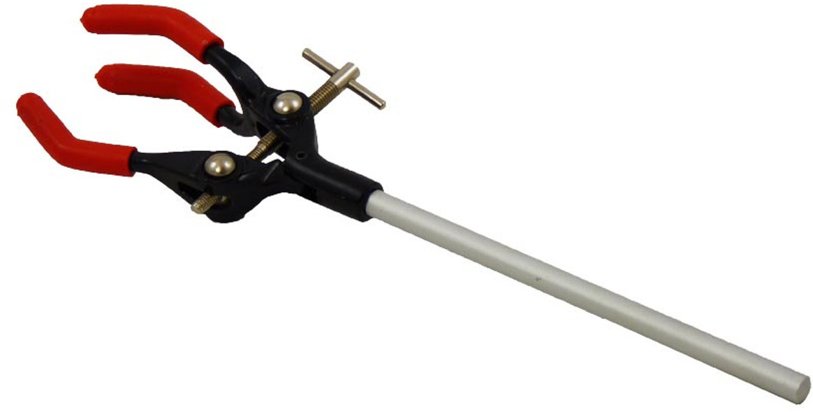
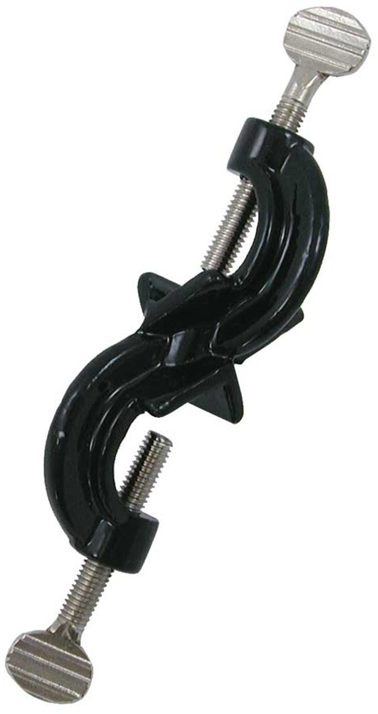
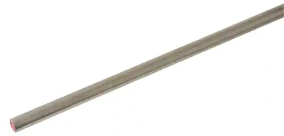
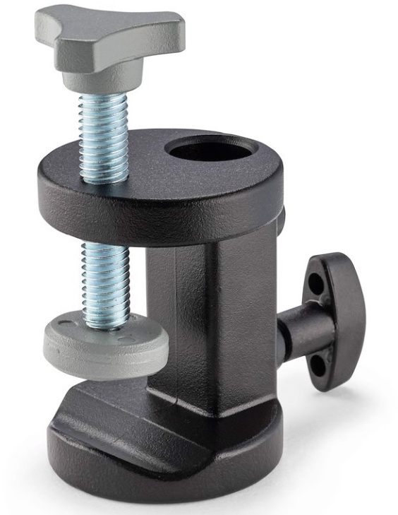
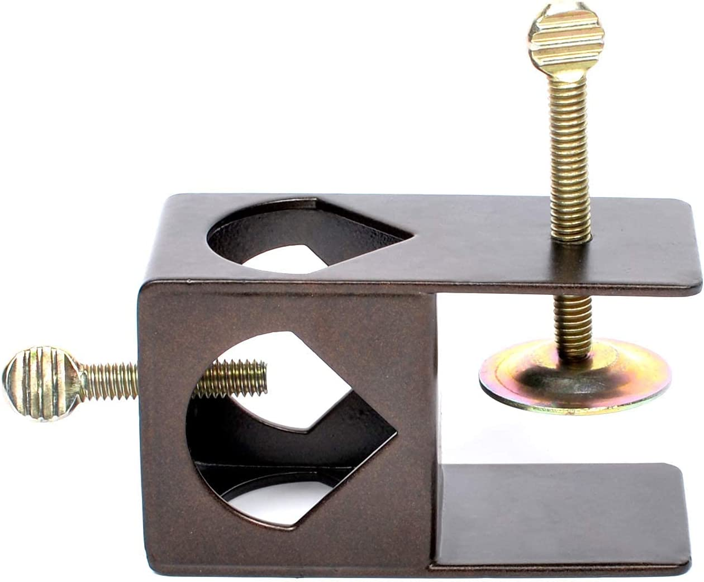

Brake fluid supply bottle - rear brake


The situation with the rear brakes is a bit complicated. Rear master cylinders are all shapes and sizes, and are usually tucked in tight. There are even ones that don't have a reservoir, just a screw-on top, which is a small target to hit.
I tried several methods that attached to the rear footpeg or other parts of the bike. These weren't really stable, and sometimes the footpeg is a weird shape or in an inconvenient place and there isn't anything suitable to clamp to.
I realized I could use inexpensive chemistry lab equipment to clamp to the bike lift instead. It's designed for the purpose, so it's stable and infinitely adjustable to quickly position the bottle exactly where you need it.
If you don't have a bike lift, then you can use an ordinary small photography tripod or lighting stand.
This is also useful for those remote front master cylinders that are supported by a thin bracket that can't take the weight of the bottle. However, you will need a rod longer than 5 feet.
|  | A 10" extension clamp from Home Science Tools for $9.80 holds the bottle. |
|  | A right-angle clamp from Home Science Tools for $6.30 connects the bottle clamp to the vertical rod. |
|  | The backbone of the setup is a 1/2"x36" steel rod from Home Depot for $10.47, which is $5 cheaper than the 48" rod, and tall enough for any bike. |
|  | To clamp the vertical rod to the bike lift, I happened to have a Manfrotto mini clamp from B&H Photo for $19.41, but that's kind of expensive. |
|  | A cheaper option is the tiki torch deck clamp from Amazon for $6.18. |